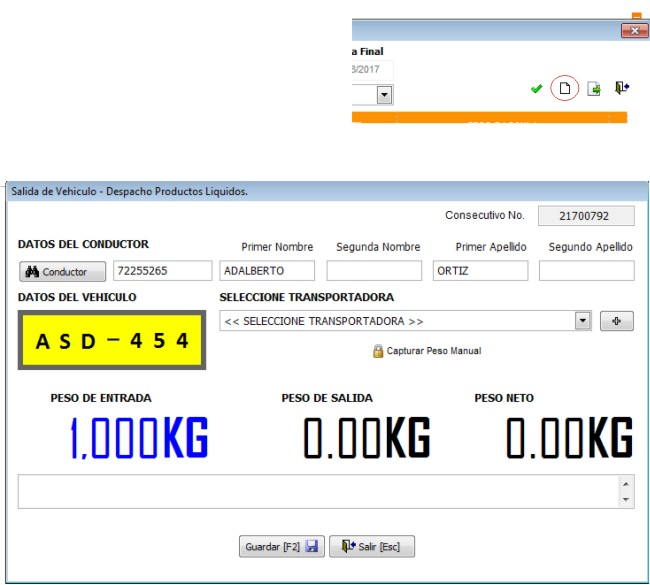
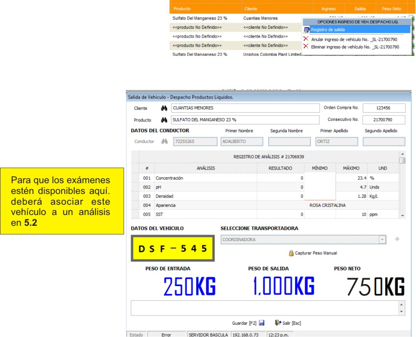
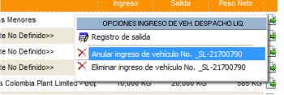
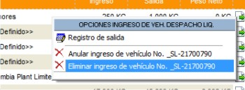

Administración Despacho Productos Líquidos¶
Ubicación¶
| Módulo: | Real Q |
|---|---|
| Grupo: | Despachos |
| Descripción: | Administración Despacho Productos Líquidos |
Introducción¶
Después de crear una órden de compra, empieza la configuración del despacho. Aquí, puede crear un nuevo despacho marcando el peso de entrada y de salida de un camión.
Existen dos formas de obtener el peso del camión de transporte: automática y manual. La forma automática se logra conectando la báscula a la red local; el sistema está escuchando un ingreso constantemente. En la forma manual, es el usuario quien introduce el peso de entrada del camión y el de salida.
Para poder introducir datos manualmente necesita los permisos adecuados. Diríjase al administrador del sistema.
Cree la entrada del despacho Crear un nuevo despacho - EntradaIngrese un Análisis y asocielo a un vehículo. Este paso no es obligatorio para ir al paso 3, pero sí para terminar el proceso.Registre la salida del camión con su nuevo peso y evalúe el peso final del producto despachado según la concentración Registrar una salida en el despacho
Crear un nuevo despacho - Entrada¶
Ejecute la opción “Administración Despacho Productos Sólidos”
Haga aclick en el botón
Selección en la lista ‘Seleccione Almacén’ el Almacén de donde sale el despacho
Seleccione un conductor de la lista haciendo click en el botón
. Si no tiene el conductor guardado, llene los datos correspondientes (nombres y apellidos) y quedará guardado de manera automática al finalizar este proceso.
Escriba la placa del vehículo de transporte (tres letras - tres números)
Seleccione una transportadora en la lista o agréguela haciendo click en el botón . Siga las instrucciones de Crear transportadora
Si el caso es el de tener una rampa/báscula conectada al sistema, verifique que el peso marcado en “Peso Entrada” es coherente. Si desea marcarlo manualmente, haga click en “Capturar peso manual” (Debe tener el permiso necesario). El sistema pedirá una contraseña, introduzcala y proceda a marcar el peso
En el cuadro de texto inferior puede hacer alguna observación pertinente
Presione
Guardar o F2

Buscar un despacho¶
- Ejecute la opción “Administración Despacho Productos Líquidos”
- Selección en la lista ‘Seleccione Almacén’ el Almacén de donde sale el despacho.
- Seleccione un producto - Opcional
- Elija un periodo marcando la opción ‘Por periodos’ o marque ‘Actuales’ Para ver los despachos creados
- Haga click en
para ejecutar la búsqueda
Registrar una salida en el despacho¶
Nota
Al buscar el despacho - entrada creado anteriormente recuerde que no puede usar el filtro cliente ya que no ha sido asignado.
Ejecute la opción “Administración Despacho Productos líquidos”
Realice una búsqueda del despacho al que ya realizó una entrada en peso. Buscar un despacho
Localice el despacho en la grilla, y al final de la fila presione
Seleccione la opción “Registro de Salida”
Seleccione el cliente
Seleccione el producto
Si ya ha asociado este auto aun análisis, entonces verá como los datos del análisis son cargados en pantalla. Si no lo ha hecho, no podrá ver el peso final real de la solución por los momentos, ya que no se tienen los datos de concentración
Si el caso es el de tener una rampa/báscula conectada al sistema, verifique que el peso marcado en “Peso Salida” es coherente. Si desea marcarlo manualmente, haga click en “Capturar peso manual” (Debe tener el permiso necesario). El sistema pedirá una contraseña, introduzcala y proceda a marcar el peso
Revise que el tercer digito: Peso Materia Prima, coincida con el peso requerido por el cliente. Recuerde que la concentración en el análisis es un factor determinante en el peso final
En el cuadro de texto inferior puede hacer alguna observación pertinente
Presione

Anular un despacho/ingreso de vehículo¶
Al anular un ingreso de vehículo se inhabilita el proceso, pero se deja registro del ingreso para poder consultarlo más adelante.
Ejecute la opción “Administración Despacho Productos Líquidos”
Realice una búsqueda del despacho al que ya realizó una entrada en peso. Buscar un despacho
Localice el despacho en la grilla, y al final de la fila presione

Eliminar un despacho/ingreso de vehículo¶
Al eliminar un ingreso, no se deja registro alguno. El consecutivo de los registros no se retrocede: si elimina el registro 17, su próximo registro NO tomará ese luhar sino más bien el siguiente: 18.
Ejecute la opción “Administración Despacho Productos Líquidos”
Realice una búsqueda del despacho al que ya realizó una entrada en peso. Buscar un despacho
Localice el despacho en la grilla, y al final de la fila presione
